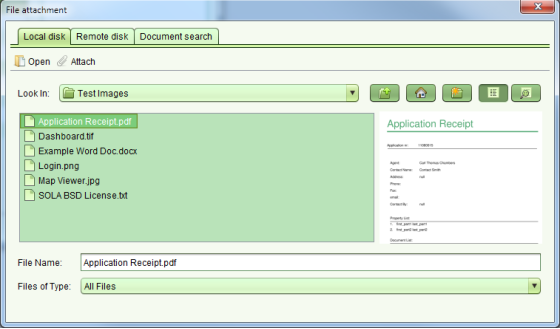
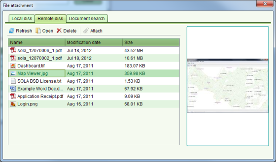
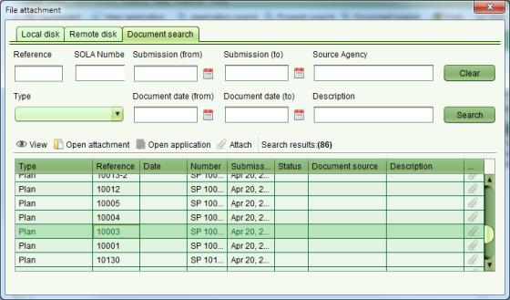

To attach a file to a new document, click the “...” button in the Attachment text field. The File Attachment dialog will display and you will be able to use it to select a file from your local computer file system, the remote file location configured for SOLA or search for a file that has already been uploaded into SOLA.

File Attachment Local disk tab

File Attachment Remote disk tab
The Remote disk view displays files that have been placed in a specific network file system location e.g. the output folder configured for a network attached scanner. Thumbnail previews are supported for standard image formats (png, tiff, jpg) as well as PDF.

File Attachment Document search tab
The Document search allows you to search existing SOLA documents for a file that was previously attached. This can be a useful way to link Power of Attorney and Standard Memorandum into the application as well as reference other documentation that may be relevant to the application.
Once you have chosen the document to attach, click theAttach button on the appropriate tab of the
File Attachment dialog. This will return you to the Documents tab (or screen) and the
filename of the attachment will be display in the Attachment text field along with a  remove icon.
If you select the wrong file as the attachment, you can click the remove icon to remove the
file attachment.
remove icon.
If you select the wrong file as the attachment, you can click the remove icon to remove the
file attachment.
Notes